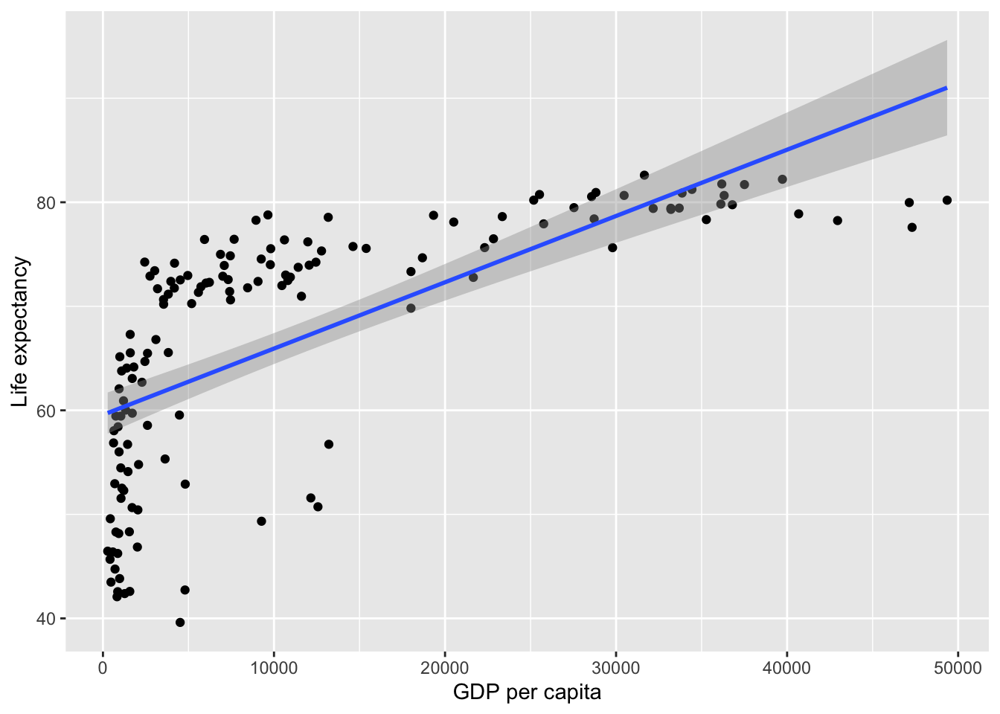
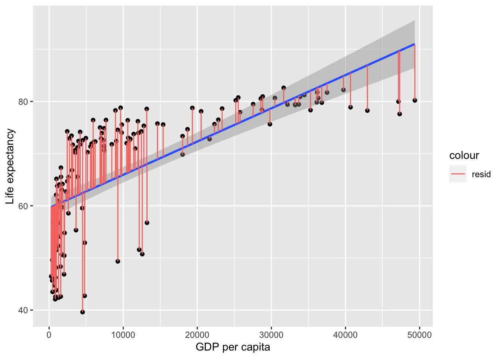

Simple regression, also known as linear regression, builds on correlation. However, unlike correlation (which quantifies the strength of the linear relationship between a pair of variables), simple regression allows you to make predictions of an outcome variable based on a predictor variable.
For example, regression can be used to predict Life Expectancy in 2007 from GDP. Lets start by visualising the association between them:
library(gapminder)library(ggplot2)# create a new data frame that only focuses on data from 2007gapminder_2007 <-subset( gapminder, # the data set year ==2007)ggplot(data = gapminder_2007,aes(x = gdpPercap,y = lifeExp, )) +# add data points as dotsgeom_point() +# add a line of best fit:geom_smooth(method='lm', # linear modelformula=y~x # predict y from x ) +# clearer x-axis labelxlab("GDP per capita") +# clearer y-axis labelylab("Life expectancy")

Linear regression analysis operates by drawing the best fitting line (AKA the regression line; see the blue line above) through the data points. But this does not imply causation, as regression only models the data. Simple linear regression can’t tell us exactly what is influencing what (i.e. whether GDP per capita increases life expectancy), this will depend on the design of your study or your broader theoretical understanding. But for now, we can investigate whether \(gdp\) predicts \(life\)\(expectancy\). The formula for the above line could be written as:
\[
Life Expectancy = intercept + gradient * GDP
\]
Gradient reflects how steep the line is
Intercept is the point at which the regression line crosses the y-axis
Let’s use coding magic to find out the intercept and the gradient (AKA slope):
# turn off scientific notation so that the numbers are not e-numbers (and thus easier to read)options(scipen =999)# Make a model of a regressionlife_expectancy_model <-lm(data = gapminder_2007,formula = lifeExp ~ gdpPercap # predict life expectancy from GDP)# report the intercept and the gradient (AKA slope) of each predictor (which will only be GDP)life_expectancy_model$coefficients
(Intercept) gdpPercap
59.5656500780 0.0006371341
The above shows that the intercept if 59.566, and that for every 1 unit ($) of GDP there is .0006 units more of life expectancy (or, in more useful terms, for every extra $10,000 dollars per person, the life expectancy goes up by 6 years).
For the above equation we will always retrieve values from the graph, except residuals, which is the ‘error’ and so a more complete formula for the outcome can be represented by the following formula
Residual reflects what’s left over, and is not represented in the line of best fit formula because you can’t predict what’s left over. Residuals reflect the gap between each data point and the line of best fit:
gapminder_2007$fitted = life_expectancy_model$coefficients[1] +# intercept life_expectancy_model$coefficients[2] *# gradient gapminder_2007$gdpPercapggplot(data = gapminder_2007,aes(x = gdpPercap,y = lifeExp, )) +# add data points as dotsgeom_point() +# add a line of best fit:geom_smooth(method='lm', # linear modelformula=y~x # predict y from x ) +# clearer x-axis labelxlab("GDP per capita") +# clearer y-axis labelylab("Life expectancy") +# add lines to show the residualsgeom_segment(aes(xend = gdpPercap,yend = fitted,color ="resid" ) )

These residuals can be thought of the error, i.e. what the model failed to predict. In more mathematical terms, the model would be:
Pearson's product-moment correlation
data: gapminder_2007$pop and res_gdp
t = 1.3842, df = 140, p-value = 0.1685
alternative hypothesis: true correlation is not equal to 0
95 percent confidence interval:
-0.04948127 0.27564447
sample estimates:
cor
0.1161931
Proportion of variance explained
In correlations we discussed how the strength of association is the proportion of variance of y explained by x. For simple regression, this is also the case:
\[
r = \frac{var_{xy}}{totalVariance} = \frac{\sum(x_i-\bar{x})(y_i-\bar{y})}
{\sqrt{\sum(x_i-\bar{x})^2*\sum(y_i-\bar{y})^2}}
\]
Lets apply the above formula to see what R is for \(gdp\) and \(life\)\(expectancy\):
summary(lm(lifeExp ~ gdpPercap + pop, data = gapminder_2007))
Call:
lm(formula = lifeExp ~ gdpPercap + pop, data = gapminder_2007)
Residuals:
Min 1Q Median 3Q Max
-22.496 -6.119 1.899 7.018 13.383
Coefficients:
Estimate Std. Error t value Pr(>|t|)
(Intercept) 59.205198140717 1.040398672164 56.906 <0.0000000000000002 ***
gdpPercap 0.000641608517 0.000058176209 11.029 <0.0000000000000002 ***
pop 0.000000007001 0.000000005068 1.381 0.169
---
Signif. codes: 0 '***' 0.001 '**' 0.01 '*' 0.05 '.' 0.1 ' ' 1
Residual standard error: 8.87 on 139 degrees of freedom
Multiple R-squared: 0.4679, Adjusted R-squared: 0.4602
F-statistic: 61.11 on 2 and 139 DF, p-value: < 0.00000000000000022
Why use regression?
Regression builds on correlation by providing a more detailed view of your data and with this provides an equation that can be used for any future predicting and optimizing of your data.
[1] 4
The differences between regression and correlation